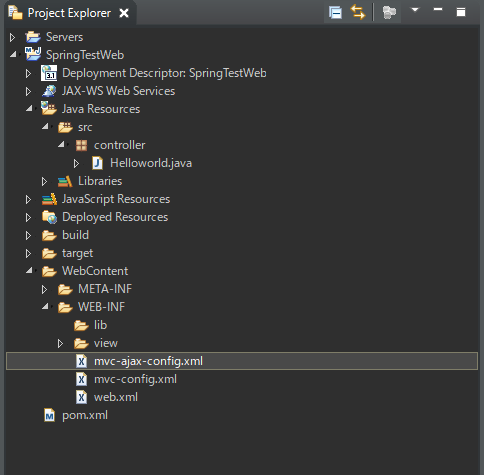
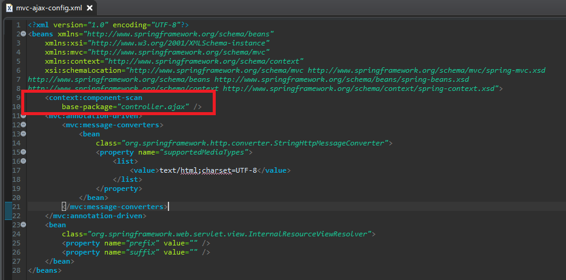
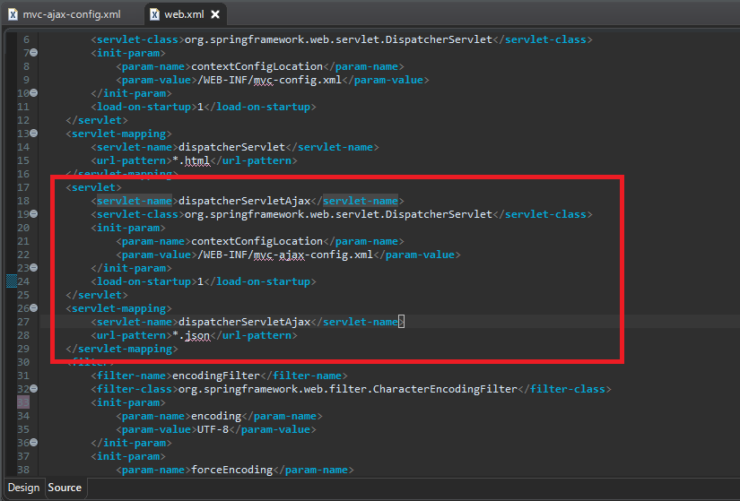
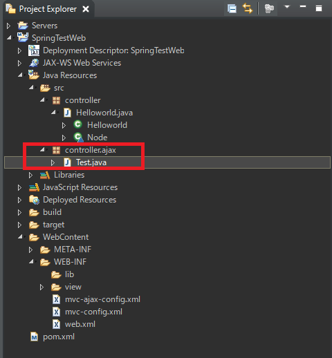
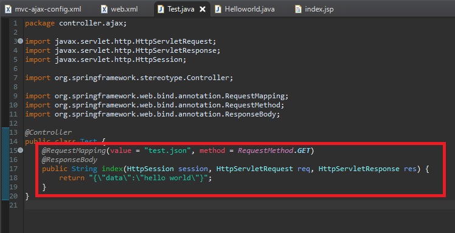
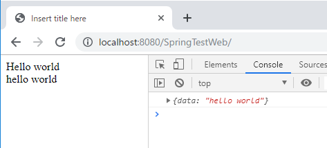
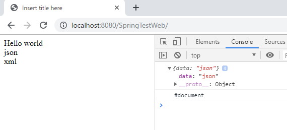

[Java] 「Web spring framework」の「Controller」で「ajax」の要請する時「json」タイプで返却する方法
こんにちは。明月です。
このページは「Web spring framework」の「Controller」で「ajax」の要請する時「json」タイプで返却する方法に関して調べてみました。
私に前述で「Web spring framwork」の「Controller」の形に関して投稿しました。
link - [Java スタディ - 36] Spring web frameworkでControllerを使用する方法
「Controller」を返却する時に、「String」タイプで返却しますが、その「String」の値が「View」のファイル名をマッピングして「html」が解析されブラウザに応答する結果になります。でも「ajax」の場合は「html」の形ではなくテキストのタイプで「json」形式に返却することなので「html」を解析する必要がないです。(※必ずそのことではなく、jsonタイプではなく「html」形式で返却する時もあります。)
その時に処理する方法で「HttpServletResponse」からソケットIOを受け取って「write」関数で返却する方法もありますが、「spring」では「mvc-config」で設定ができるのでその方法で修正します。
前述、「mvc-config」ファイルで「*.html」の形の「url」を「mvc controller」で処理しましたが、「ajax」の場合は「*.json」の形で動くように「config」設定をします。
link - [Java スタディ - 35] EclipseでSpring web frameworkを利用してウェブサービスプロジェクトを立ち上がる方法
mvc-ajax.config.xmlの名前でマッピング設定をします。

<?xml version="1.0" encoding="UTF-8"?>
<beans xmlns="http://www.springframework.org/schema/beans"
xmlns:xsi="http://www.w3.org/2001/XMLSchema-instance"
xmlns:mvc="http://www.springframework.org/schema/mvc"
xmlns:context="http://www.springframework.org/schema/context"
xsi:schemaLocation="http://www.springframework.org/schema/mvc http://www.springframework.org/schema/mvc/spring-mvc.xsd
http://www.springframework.org/schema/beans http://www.springframework.org/schema/beans/spring-beans.xsd
http://www.springframework.org/schema/context http://www.springframework.org/schema/context/spring-context.xsd">
<context:component-scan
base-package="controller.ajax" />
<mvc:annotation-driven>
<mvc:message-converters>
<bean
class="org.springframework.http.converter.StringHttpMessageConverter">
<property name="supportedMediaTypes">
<list>
<value>text/html;charset=UTF-8</value>
</list>
</property>
</bean>
</mvc:message-converters>
</mvc:annotation-driven>
<bean
class="org.springframework.web.servlet.view.InternalResourceViewResolver">
<property name="prefix" value="" />
<property name="suffix" value="" />
</bean>
</beans>

そして「web.xml」を設定します。

<servlet>
<servlet-name>dispatcherServletAjax</servlet-name>
<servlet-class>org.springframework.web.servlet.DispatcherServlet</servlet-class>
<init-param>
<param-name>contextConfigLocation</param-name>
<param-value>/WEB-INF/mvc-ajax-config.xml</param-value>
</init-param>
<load-on-startup>1</load-on-startup>
</servlet>
<servlet-mapping>
<servlet-name>dispatcherServletAjax</servlet-name>
<url-pattern>*.json</url-pattern>
</servlet-mapping>
そして私は「controller.ajax」のパッケージでマッピングしましたので「controller」パッケージの派生パッケージの「ajax」を生成します。その後、「Test.java」クラスを生成しますね。


@Controller
public class Test {
@RequestMapping(value = "test.json", method = RequestMethod.GET)
@ResponseBody
public String index(HttpSession session, HttpServletRequest req, HttpServletResponse res) {
return "{\"data\":\"hello world\"}";
}
}
ここで確認しなければならないものは「ResponseBody」のアノテーションです。以前には「return」の値が「view」ファイル名とマッピングして「jsp」ファイルが解析してウェブブラウザで応答されましたが、「ResponseBody」アノテーションで「Return」の値がRequestBodyでそのまま応答しますね。
それなら「index.jsp」部分で「json」ファイルを受け取るように修正します。
<%@ page language="java" contentType="text/html; charset=UTF-8" pageEncoding="UTF-8"%>
<!DOCTYPE html>
<html>
<head>
<meta charset="UTF-8">
<title>Insert title here</title>
</head>
<body>
${Data}
<!-- ajaxの結果値 -->
<div id="result"></div>
<!-- ajaxで使用できるようにjqueryをリンクする。 -->
<script src="https://code.jquery.com/jquery-3.3.1.min.js"></script>
<script>
$(function(){
$.ajax({
// test.json을 요청한다.
url: "./test.json",
type: "GET",
dataType: "json",
success: function (ret) {
console.log(ret);
$("#result").html(ret.data);
}
});
});
</script>
</body>
</html>

結果は予想とおりに出ました。ここまでできると「Spring」の中で「json」データを受け取るのが可能ですね。
前述でヘッダでコントローラ要請を分岐するようの方法で追加説明します。
「Controller」で「accept」のヘッダ内容で「method」を分岐するのができますが私の場合は「json」と「xml」で分岐しますね。
@Controller
public class Test {
// json形式で要請が来るとここを呼び出す。
@RequestMapping(value = "test.json", method = RequestMethod.GET, produces = { "application/JSON" })
@ResponseBody
public String index(HttpSession session, HttpServletRequest req, HttpServletResponse res) {
return "{\"data\":\"json\"}";
}
// xml形式で要請が来るとここを呼び出す。
@RequestMapping(value = "test.json", method = RequestMethod.GET, consumes = { "application/XML" })
@ResponseBody
public String index1(HttpSession session, HttpServletRequest req, HttpServletResponse res) {
return "<?xml version=\"1.0\" encoding=\"UTF-8\"?><data>xml</data>";
}
}
「produces」と「consumes」は同じパラメタだと思えばよいです。「produces」で「contentType」の種類を入れてメソッドを分岐しました。
また「index.jsp」に戻って修正します。
<%@ page language="java" contentType="text/html; charset=UTF-8" pageEncoding="UTF-8"%>
<!DOCTYPE html>
<html>
<head>
<meta charset="UTF-8">
<title>Insert title here</title>
</head>
<body>
${Data}
<!-- ajaxの結果値 -->
<div id="result"></div>
<!-- xmlの結果値 -->
<div id="result1"></div>
<!-- ajax를 사용할 수 있게 jquery를 링크한다. -->
<script src="https://code.jquery.com/jquery-3.3.1.min.js"></script>
<script>
$(function(){
// json要請のajax
$.ajax({
url: "./test.json",
type: "GET",
contentType: "application/JSON",
dataType: "json",
success: function (ret) {
console.log(ret);
$("#result").html(ret.data);
}
});
// xml要請のajax
$.ajax({
url: "./test.json",
type: "GET",
contentType: "application/XML",
dataType: "xml",
success: function (ret) {
console.log(ret);
$("#result1").html($(ret).find("data"));
}
});
});
</script>
</body>
</html>

あー残念でしたが、「xml」データをコンソールで表示されないですね。でも「html」では「ｘｍｌ」というデータがちゃんと入力されました。
- [Java] Java servletでインスタンスを初期する方法2019/10/17 07:15:48
- [Java] Spring web frameworkで発生する文字化けのEncoding設定2019/10/16 07:32:55
- [Java] Web Spring frameworkでfilter設定2019/10/15 20:12:35
- [Java] Web serviceのweb.xmlでエラーページ設定2019/10/14 20:13:44
- [Java] JPAのDAOをFactoryパターンで管理する方法2019/10/13 22:55:52
- [Java] JPAのSpring frameworkで依存性注入する方法2019/10/13 00:40:08
- [Java] JPAでDAOを生成する方法2019/10/11 07:30:14
- [Java] JPAでトランザクションの使用方法とオブサーバーパターンで共通トランザクション関数を作り方2019/10/10 07:29:43
- [Java] JPAのQuery を作り方2019/10/09 07:34:08
- [Java] JPAのEntityクラス設定(Cascade, fetch)2019/10/08 07:43:33
- [Java] JPAでpersistance.xml設定とentityクラス設定(@GeneratedValue設定)2019/10/07 07:38:13
- [Java] EclipseでJPAフレームワーク設定する方法2019/10/04 19:24:43
- [Java] Web spring frameworkのJSPで使う言語 JSTL - XML2019/10/03 20:02:06
- [Java] Web spring frameworkのJSPで使う言語 JSTL - 関数、データベース2019/10/02 21:00:22
- [Java] Web spring frameworkのJSPで使う言語 JSTL - コアー、フォーマッティング2019/10/01 21:48:08
- [Python] 10. モジュールとパッケージ(import)2020/06/08 19:07:50
- [Python] 09. 例外処理する方法2020/06/05 17:11:47
- [Python] 08. ジェネレータ(Generator)2020/06/04 18:46:08
- [Python] 07. globalとnonlocal2020/06/03 20:34:49
- [Python] 06. 関数(function) - インライン関数、callbak、ラムダ(lambda)そしてクロージャ2020/06/02 20:51:22
- [Python] 05. コンプリヘンション(Comprehension)を使用する方法2020/06/01 19:38:58
- [Python] 04. 制御文(if, while, for, break, continue)とインデント2020/05/29 21:09:08
- [Python] 03. Pythonでリスト(list)とタプル(tuple)、そしてディクショナリ(dictionary)、セット(set)2020/05/27 18:49:08
- [Python] 02. データタイプ、変数宣言そしてコメントする方法2020/05/26 18:16:52
- [Python] 01. Python3をインストールする方法(Anacondaインストール)2020/05/25 19:02:44
- [Java] HttpConnectionを利用してウェブページを取得する方法2020/05/20 23:53:24
- [Java] Jsoupを利用してXMLファイル(HTML)を扱う方法2020/05/19 19:32:21
- [C#] 非同期ソケット通信(IOCP)-APMパターン2020/05/18 18:45:37
- [C#] 非同期ソケット通信(IOCP)-EAPパターン2020/05/15 19:31:02
- [C#] ソケット(Socket)通信をする方法2020/05/13 17:37:13